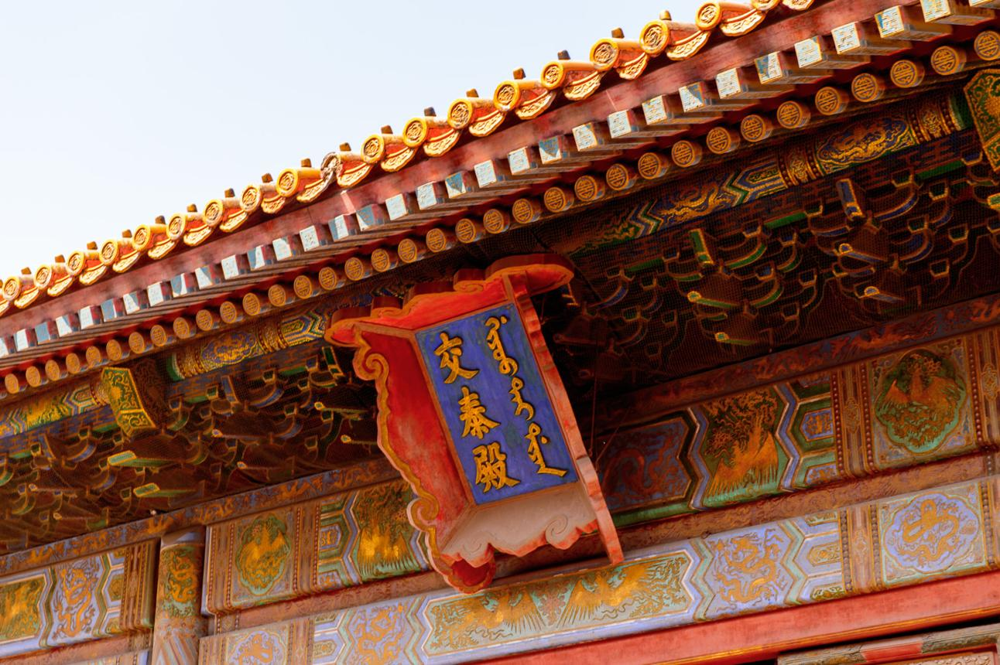

Promoting My Home Town City
Discover Baoding, Hebei, China
A city of history, lotus scenery, local flavor, and growing energy in northern China. Baoding offers a balanced mix of tradition, culture, and convenient modern life.
Designed by Liu Zining i25037243
City Overview
Why Baoding Stands Out
Located in Hebei Province and close to Beijing and Xiong'an New Area, Baoding is known for its strategic location, historical importance, and strong local identity.
It is a city where visitors can see cultural heritage, experience authentic daily life, and enjoy natural scenery such as lotus wetlands and mountain landscapes.
Designed by Liu Zining i25037243
Quick Facts
A Clear First Impression
Location
Central Hebei Province, near Beijing and Tianjin
Character
Historic, practical, welcoming, and steadily developing
Highlights
History, lotus landscapes, local food, culture, and transport
Best For
Students, travelers, and project presentations about Chinese cities
Designed by Liu Zining i25037243
Website Sections
Explore by Page
This upgraded version is divided into clear pages, making the site feel more polished and easier to present.
Designed by Liu Zining i25037243
Cleaner Layout
Less scrolling, clearer grouping, and a more professional small-website structure.
Better Presentation
The upgraded design is more suitable for classroom display and project submission.
Stronger Visual Identity
Deeper colors, better spacing, and a more tourism-style look create a stronger impression.
Designed by Liu Zining i25037243